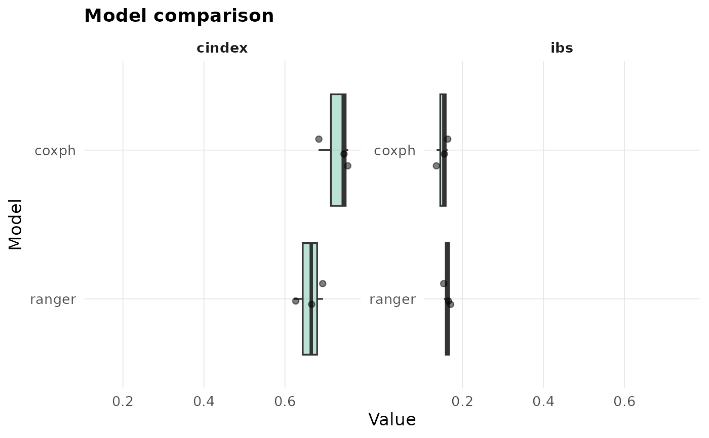

Evaluates each learner in models on the same set of resampling splits, so
the per-fold values are paired across models. Returns a leaderboard plus the
full per-split table.
Arguments
- formula
A survival formula.
- data
A data frame.
- models
Character vector of learner ids, or a list mixing ids and custom learners (see
fit()). List names, when given, label the learners.- specs
Named list of engine-argument lists, keyed by learner label (
specs[["ranger"]] <- list(num.trees = 500)).- times
Evaluation grid;
NULLpicks up to 50 event-time quantiles (5th to 95th percentile).- resampling
A resampling spec (default
cv()); the split set is drawn once and reused for every model.- metrics
Character vector from
listmetrics()$metric.- tune
Logical. When
TRUE, each tunable model is tuned once on the full data (its default grid) and the winning configuration is then evaluated on the shared folds. This is not nested CV, so the tuned results are optimistic; a message is emitted. DefaultFALSE.- ncores
Cores for the split loop (default
1).- ...
Unused.
Value
A survalis_compare object: leaderboard (model x metric, mean and
se), per_split (long), times, resampling, metrics, models, tuned.
Examples
cmp <- compare(Surv(time, status) ~ age + karno + celltype, veteran,
models = c("coxph", "ranger"), times = c(90, 180, 365),
resampling = cv(3))
cmp
#> <survalis_compare> 2 models
#> <survalis_resampling> 3-fold CV, strata = status
#>
#> cindex (higher is better):
#> * coxph 0.7282 (se 0.0229)
#> ranger 0.6617 (se 0.0300)
#>
#> ibs (lower is better):
#> * coxph 0.1496 (se 0.0071)
#> ranger 0.1609 (se 0.0046)
plot(cmp)
